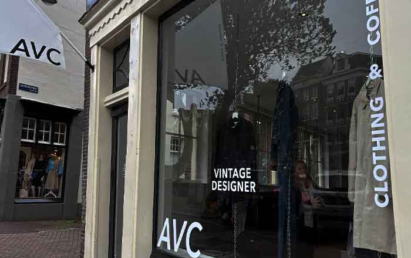

Wie zijn wij
Je vraagt je vast af wat wij doen als je onze naam voorbij ziet komen, nou leuk dat je het vraagt. Wij zorgen ervoor dat oude kleding een nieuw leven in wordt geblazen en daarom een steentje bij dragen voor het zorgen van een schoner milieu.
Mijn start
Waar ben ik begonnen en waarom ben ik hiermee begonnen, ik ben zelf veel bezig met kleding en vind het shoppen van vintage of oude kleding veel leuker dan nieuwe kleding, ik merk zelf dat oude kleding veel beter gemaakt is en veel leuker zit over het algemeen.
Ik merkte zelf dat het steeds minder gebeurde dat mensen vintage kleding dragen, dus wilde ik daar aan wat gaan doen, ik merk namelijk dat oude in een nieuw jasje steken veel doet bij mensen, omdat je iets doet voor het milieu en een uniek item hebt, omdat wij zelf een nieuw item maken van 2 of meerdere items, door zelf de items te shoppen of een kleding kar te kopen op veilingen met kleding wat is kwijtgeraakt.
Mijn doel
Dan vraag je je natuurlijk af wat is jullie doel dan of hebben jullie überhaupt een doel? En of we een doel hebben, we hopen dit echt tot een brand uit te breiden dat het echt iets wordt wat bekend is straks, dat het normaal weer is om door bijna heel Nederland of Europa New Vintage kleding te dragen, waardoor de wereld ook weer een stukje schoner wordt en we ons zonder dat we het door hebben helpen aan een schonere wereld.